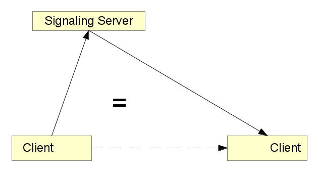
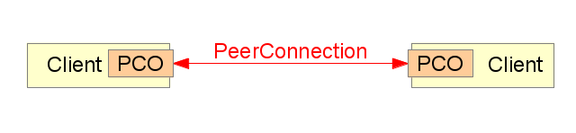

WebRTC
Simple P2P Communication for the Web
JSUnconf EU 2014 / @JanLelis
palava.tv
Browser-to-Browser Video
Completely Open Source
Run by a Non-Profit
RTCWEB / IETF
Enables P2P Connections between Browsers ...
... including Video/Audio Streams
Adapts and existing VOIP Technologies
Almost every major Player sits at the Table
WebRTC / W3C
JavaScript API for the RTCWEB
Supported in Blink and Mozilla
WebRTC
Brings P2P/Real-time Communication to the Web!
Supported in Blink and Mozilla
Video Conferences?
Pure WebRTC limited to Mesh Structure
More with Multipoint Control Units / Selective Forwarding Units
JavaScript API

JavaScript API: getUserMedia
getUserMedia
<video id="gum-video" autoplay="autoplay">
<script>
navigator.webkitGetUserMedia(
{video: true, audio: false},
function(stream) {
document.getElementById('gum-video').src =
webkitURL.createObjectURL(stream);
}
);
</script>
P2P connection requirements
Initialization is done using a Signaling "Rendevouz" Server
Exchange of Streaming Properties (SDP)
NAT Traversal via ICE: STUN/TURN Servers
WebRTC Signaling Concept
Developer implements how to establish a PeerConnection
Custom Protocols vs. XMPP
WebSockets vs. XHR vs. Pidgeons
External Signaling Channel
Find Peers

Exchange Media Capbilities

"Hole Punching"

Success!
Example Signaling Servers
palava-machine (ruby)
signalmaster (node.js)
webrtc.io (node.js)
together.js hub (node.js)
peerjs server (node.js)
I am working on a service: signaling.io
Palava Machine Signaling Protocol
A few defined JSON messages
Client → Server
join_room(room_id, status)
send_to_peer(peer_id, data)
update_status(status)
Server → Client
joined_room(me, peers)
peer_updated_status(peer_id, peer_status)
error(id, message)
shutdown(seconds)
Client → Client
via send_to_peer
offer(sdp)
answer(sdp)
ice_candidate(...)
JavaScript API: PeerConnection
Prepare PeerConnection
// already got localStream via getUserMedia
var pc = new webkitRTCPeerConnection(
{iceServers: [{url: "stun:93.186.193.18"}]},
{optional: [{DtlsSrtpKeyAgreement: true}]}
);
pc.addStream(localStream);
pc.onaddstream = function(event) {
console.log("adding remote stream");
$('#video-tag')[0].src =
webkitURL.createObjectURL(event.stream);
};
Establish PeerConnection
// connect to signaling provider
var server = new WebSocket('wss:machine.palava.tv');
// ...
pc.createOffer(function(sdp) {
// register local sdp in our new connection
pc.setLocalDescription(sdp);
// send the "sdp" to other peer
server.send(JSON.stringify({peer_id: 42, event: 'offer', sdp: sdp}));
// ...
// other peer receives 'offer' and sends an 'answer' via server
server.onmessage = function(msg) {
payload = JSON.parse(msg.data);
if(payload.event === 'answer') {
pc.setRemoteDescription(
new RTCSessionDescription(payload.sdp)
);
// exchange ice candidates... when finished:
// pc.onaddstream callback will be called by WebRTC
WebRTC / Conclusion
Allows for a new generation of real-time applications
Provides a simple JavaScript APIs for doing so
It is a standard:
It is designed to be compatible with the rest of the world
Thank you!
slides: palavatv.github.com/talk-jsunconf-webrtc
good resources: webrtchacks.com